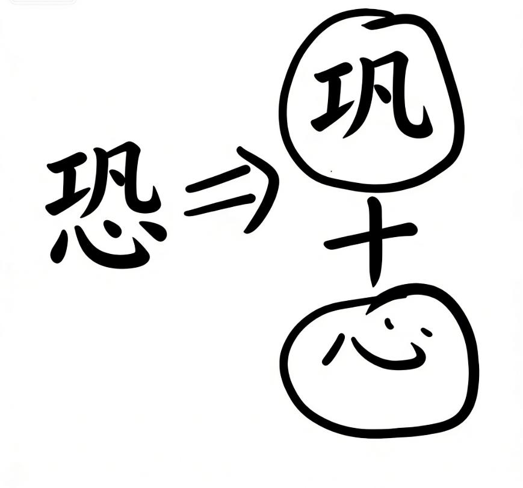
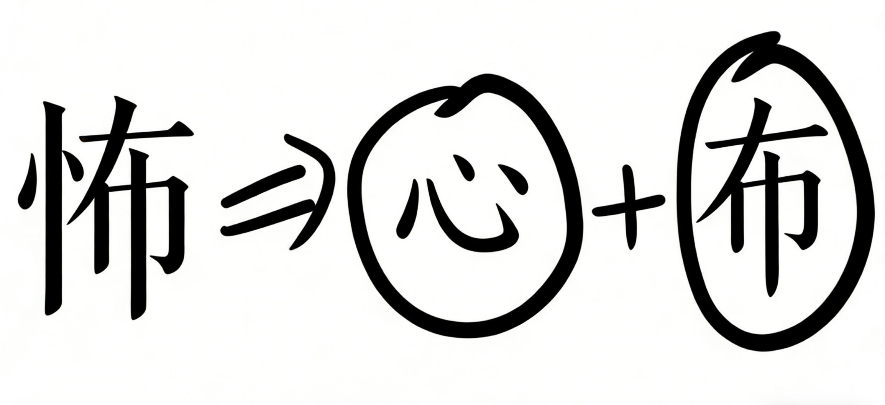
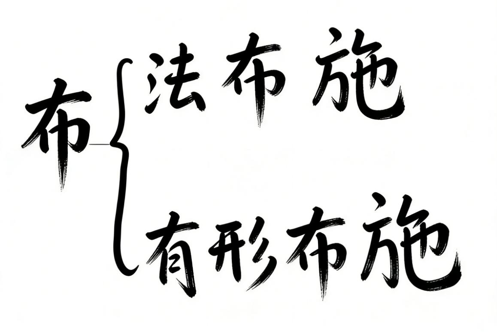
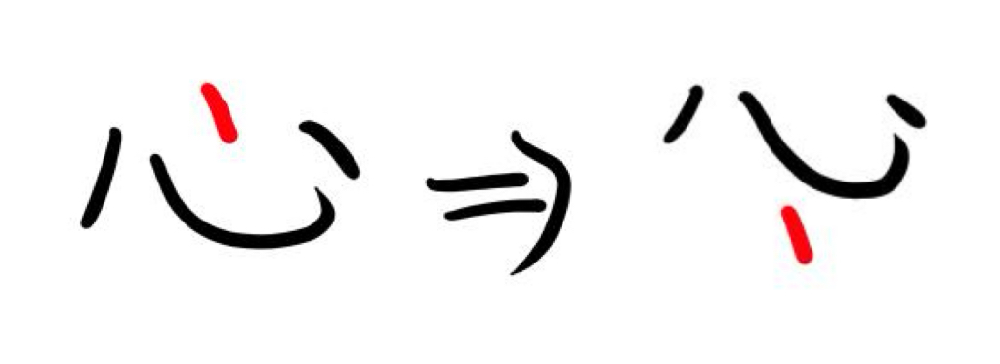

🌸 恐惧 🌸
一、恐：心里的“巩固”
我们很多人为什么会对未来，未知的东西有种恐惧，恐怖呢？
其实就是因为未知嘛，所以心里害怕
这个恐从哪里来，
就是你在心里一直的“巩固”这个东西
然后放在了心上
所以就变成了恐怖

二、怖：以心布施
咱们再看这个“怖”字
“怖”字呢是一个心和一个“布”

那我们可以解释为什么：就是用心的布施就可以化解这个“恐”
能听懂哈
那么这个布施呢又可以分为“法布施”和“有形的布施”

可能很多小娃娃都知道啊
法布施是什么呢？打个比方说韩红老师在那么多人的演唱会上唱了六字真言，这就叫法布施（六子，佛号，经文，回向，还有运用你佛法学到的东西开导别人这也叫法布施）。
还有一种有形的布施是什么呢？
就是捐钱，物，粮食这些。
之前有讲过，吃不完的粮食你可以喂喂小鸟
这两种就是有形和无形的布施。
无论什么布施，如果是你想要功德去做，你肯定它都没有，知道吧。是应无所住，而生其心。
就是不要为了做而做。
用心的布施，不管是有形还是无形的布施，能够帮我们达到心上的布施，那就能消除这个“恐”，

三、心量：从1到10000
因为你心里装的是万事万物。
你就不是一味的让你“巩固”让你“恐”的事情了。
那么将这个布施从1做到100做到1000（1—100—1000）。
你想想，你这个心越来越大，越来越大。
那你装的东西多了，你还会对未来，对未知的东西恐惧吗？
那显然是不可能啊，对吧。
因为你心里没有一直想这些不确定的东西了，这些不确定的人和事。
你心里只是有这个布施，用心的布施。
四、消除恐惧的秘诀
所以说，如果想要消除恐惧：
第一，不要总是巩固这个念头在自己的心里，就是把这个东西不放心上。
第二，把这一点放到下面来，不放在心上。

然后呢通过法布施，有形的布施，就是根据你能力而为。
将布施从1做到100，1000。
你的心越来越大就不会恐惧这些未知的东西。
甚至说不会恐惧一切不安定的因素。
因为你心里装满了有形无形的，你心里是有爱的，你的心里是有力量的。
如果说你心里就爱一个人，那你就真的很可怕啊，因为你心上就装着一件事情，你装的事情多一点，感恩的事情多写点，那就不害怕了啊。
五、眼界要比生活高一点
好，听懂了吗，还是那句老话，祝大家开开心心每一天。
所以很多时候哈，大家害怕的时候，你就转移一下注意力，你把你的心量放大，只关注一个人、一件事，两个人、两个事，你肯定心里很烦，你把心里装上万事万物，你就不会烦，不会害怕了。
你比如说我经常讲的精神世界不要装上人，不要是人，是你的精神世界，因为别人总会走，那是别人装什么山川河流、花鸟湖泊这些祖国大好河山，它不会变哈。
反正总而言之一句话就是法布施啊，有形的布施，你把这些感恩的事情啊，从1做到100，做到1,000，做到1万，你心里装的是万事万物的时候，你就不会恐惧那一个点，两个点不会恐惧一个人，两个事情，是不是就是这样的？
因为你的心越来越大了呀？一直告诉大家，心一定要大，眼界要比生活高一点，就是这个原因，因为你只关注这一个点，你肯定害怕，你只看一个黑点，这黑点就把你吞噬了，是不是？
很多时候人恐怖其实都是自己想出来的，就像前两天的文案一样，人家都没有参与你的人生和你的情绪，一切都是你幻想想象出来的对不对？就是心嘛，那一切都是你的心主宰的。
所以你哎呀难受啊，我这不舒服，那不得劲，是不是有人害我，是不是大家都针对我？其实是你的心出偏差了，一直在巩固这一点，所以就恐了。
是不是这拆字很有意思？中国字就很有意思。